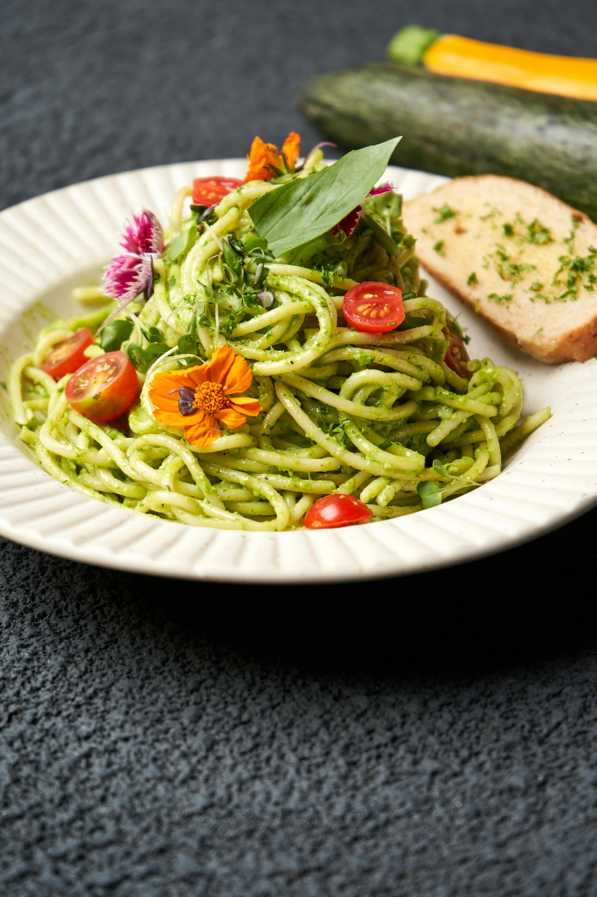

Tomato and Pesto Spaghetti
This tomato and pesto spaghetti recipe is unbelievably easy and can be rustled up in just 20 minutes. Cook the tomatoes with garlic, chilli and lemon to bring out the delicious sweetness before tossing through spaghetti and tangy green pesto. Family dinners don't get easier than this!
- Serves 4
- 10 mins to prepare and 10 mins to cook
- Healthy
Source: realfood.tesco.com
Ingredients:
- 1 tbsp olive oil
- 330g pack cherry tomatoes, halved
- 4 garlic cloves, finely chopped
- ½ tsp crushed chillies, plus extra to serve (optional)
- 1 lemon, zested and juiced
- 1 lemon, zested and juiced
- ¾ x 190g jar spinach and ricotta pesto (or green pesto)
Method
- Heat the oil in a frying pan over a medium heat. Add the tomatoes, season well and fry for 4-5 mins, stirring occasionally, until beginning to soften and caramelise. Stir in the garlic, chillies and lemon zest, reduce the heat to low and cook for 2-3 mins until fragrant.
- Meanwhile, bring a large pan of salted water to the boil and cook the spaghetti to pack instructions. Drain, reserving 2 tbsp of the cooking water.
- Stir the pesto, lemon juice and reserved cooking water into the pasta, using tongs to toss everything together to coat. Toss through half the tomatoes, then divide between 4 bowls and spoon over the remaining tomatoes. Sprinkle with extra chillies to serve, if you like.
- Stir through a large handful of spinach per person to help towards your 5-a-day.